О компании
Производственная компания ООО АПК «Липецк» занимается производством запчастей для дисковых борон БДМ, Доминанта, а также подшипниковых узлов и стоек для импортной с/х техники. Кроме того, оказываем услуги по ремонту и изготовлению любых карданных валов для автомобилей и спецтехники, восстановлению соосных отверстий в сочленениях системы палец-отверстие. Разнообразное специализированное оборудование и профессиональный коллектив сотрудников позволяет выполнять технически сложные задания в сжатые сроки с высоким качеством.
Преимущества сотрудничества
продукции и услуг
выполнения заказа
к обслуживаемой технике

